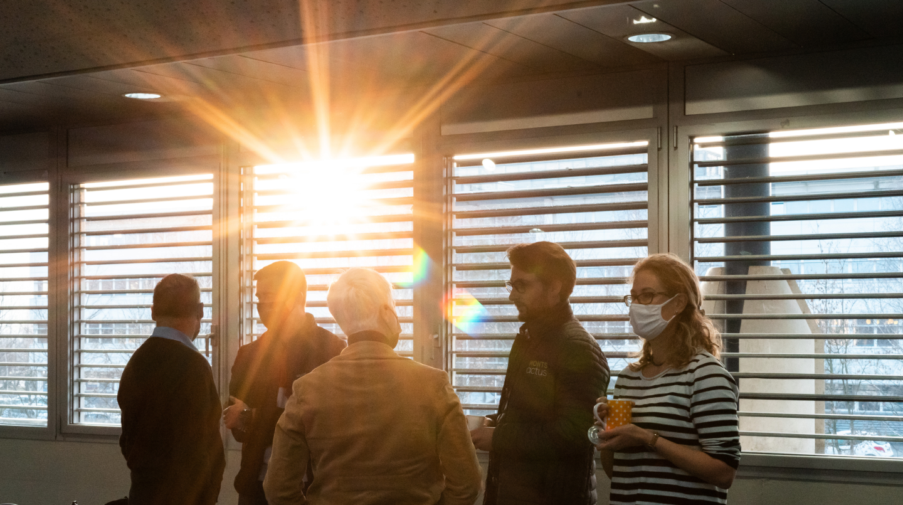
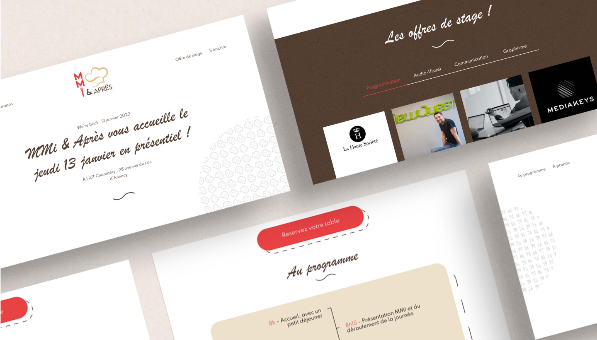

Notre démarche
Grâce aux réunions régulières le projet a pu avancer
correctement. Chaque tâche était attribuée à plusieurs membres
de l’agence en suivant le planning prévisionnel. Pour nous
permettre d’être à jour dans ce contexte sanitaire
particulier, les rendez-vous clients avec Antony Wright
étaient fréquents.

Problèmes rencontrés
Le problème principal que nous avons rencontré a été la prise
de contact avec les entreprises. Malgré plusieurs appels et
des relances par mails, la majorité des entreprises ne
répondait pas ou n’étaient pas en mesure de venir à
l’événement. De novembre jusqu’à la veille de l'événement,
nous avons continué sans relâche à appeler des entreprises
pour offrir aux étudiant·e·s plus d’offres de stages.
L’organisation d’un événement reste quelque chose de compliqué
qui dépend de plusieurs facteurs. Les conditions sanitaires
actuelles ont semé plusieurs fois le doute dans l’organisation
de la journée. En effet, le fait que l’événement puisse se
dérouler en distanciel était un doute permanent et nous avons
dû imaginer différents scénarios pour toujours être en mesure
de le réaliser. Il a également fallu tenir compte des mesures
en vigueur pour agencer la salle et s’occuper des repas et
collations.
Enfin, certaines entreprises ont annulé leur venue à
l’événement la veille de ce dernier. Nous avons dû rebondir
rapidement pour prévenir les étudiant·e·s concerné·e·s et
réadapter le planning des stages dating.

Bilan général
Réaliser un projet de A à Z a été un grand défi pour notre
agence. Grâce à cela, nous avons pu avoir un aperçu du travail
conséquent qu’a une agence de communication événementielle et
apprendre à nous organiser pour réaliser un événement aussi
conséquent à notre échelle.